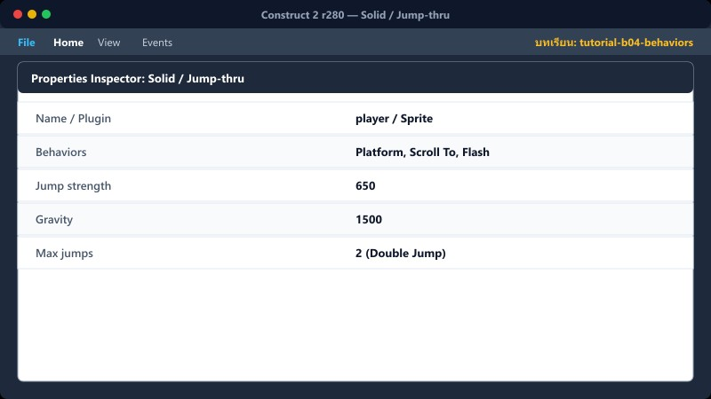
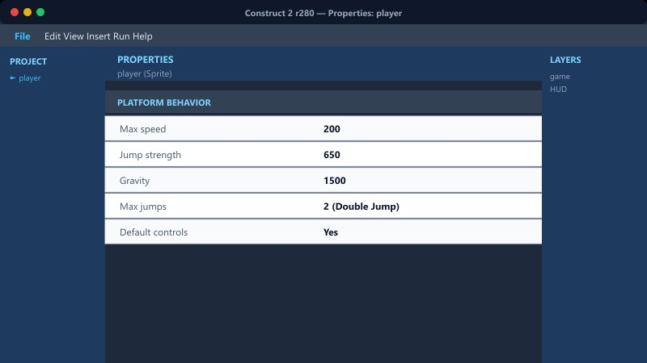
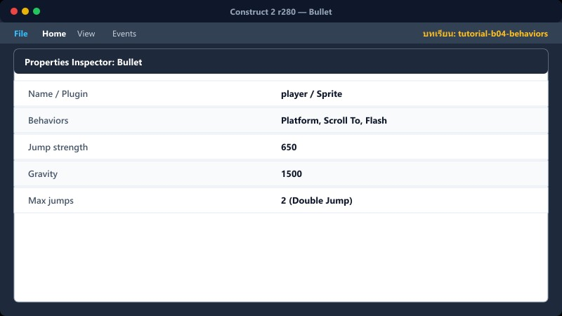
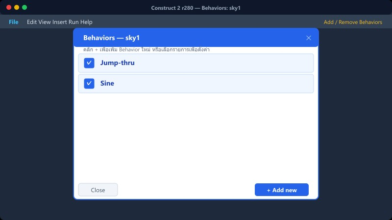
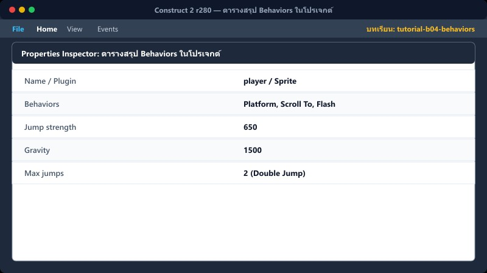
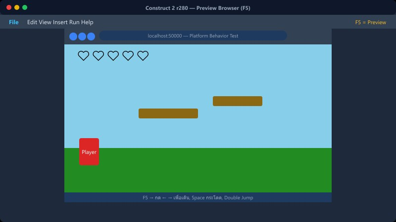

Select Object→Properties→Behaviors→Add behavior
1Solid / Jump-thru

1. คลิกเลือก Object ที่ต้องการใส่ Behavior (เช่น พื้น หรือกำแพง)
2. ไปที่หน้าต่าง Properties ด้านซ้าย คลิกเลือกลิงก์ Behaviors
3. คลิกไอคอน + (Add new behavior)
4. เลือก Solid หรือ Jump-thru แล้วกด Add
Solid = ชนจากทุกทิศ ไม่ทะลุ (ใช้กับพื้น กำแพง)
Jump-thru = ทะลุจากล่าง ยืนบนได้ (ใช้กับเกาะลอย)
📍 ที่ไหนใน C2: เลือก object → Properties → Behaviors → Add behavior
2Platform + Scroll To

1. เลือก player แล้วคลิก Behaviors ใน Properties
2. กด Add เลือก Platform (ควบคุมเดิน/กระโดดด้วยลูกศร)
3. กด Add อีกครั้ง เลือก Scroll To (กล้องตามตัวละคร)
4. ปรับค่าใน Properties ของ Platform:
| Platform Behavior |
|---|
| Max jumps | 2 |
| Jump strength | 650 |
| Gravity | 1500 |
| Default controls | Yes |
📍 ที่ไหนใน C2: player → Behaviors
3Bullet

1. เลือก Object ที่จะเป็นกระสุน (เช่น emon_bullet)
2. เข้าเมนู Behaviors → Add Bullet
3. Add อีก 1 Behavior คือ Destroy outside layout เพื่อลบกระสุนทิ้งเมื่อออกนอกจอ (ช่วยประหยัดหน่วยความจำ)
4. สามารถตั้งความเร็วกระสุนได้ที่ Properties หัวข้อ Bullet
| Bullet Behavior |
|---|
| Speed | 400 |
| Set angle | Yes |
📍 ที่ไหนใน C2: emon_bullet → Behaviors
4Sine / Flash

Sine: ทำให้ object เคลื่อนที่ซ้ำๆ ไปกลับ (มอนเดินซ้าย-ขวา, เกาะลอยขึ้น-ลง)
1. เลือกมอนสเตอร์ → Behaviors → Add Sine
2. ปรับ Movement เป็น Horizontal (ซ้ายขวา) หรือ Vertical (บนลงล่าง) ใน Properties
Flash: กระพริบชั่วคราว (ใช้ตอนอมตะหลังโดนโจมตี)
1. เลือก player → Behaviors → Add Flash
2. เมื่อโดนโจมตี ให้สั่งงานใน Event sheet: player → Flash (0.1, 0.1, 1)
📍 ที่ไหนใน C2: eminy → Behaviors → Sine, player → Behaviors → Flash
5ตารางสรุป Behaviors ในโปรเจกต์

| Object | Behaviors ที่ใช้ |
|---|
| player | Platform, Scroll To, Flash |
| พื้น (Ground) | Solid |
| เกาะ (Platform) | Jump-thru |
| มอนสเตอร์ (Enemy) | Sine |
| กระสุน (Bullet) | Bullet, Destroy outside layout |
6⚠️ ข้อผิดพลาดที่พบบ่อย

- ใส่ Solid ให้เกาะลอย ทำให้เวลาผู้เล่นกระโดดจากข้างล่างจะติด ไม่ทะลุ
- ลืมใส่ Scroll To ให้ player ทำให้เดินแล้วตกจอ กล้องไม่ตาม
- ลืมใส่ Destroy outside layout ให้กระสุน ทำให้กระสุนล้นหน่วยความจำ เกมกระตุก